<!-- Reference section 07-div (div). Styles: ../styles.css. Its words are the page's own; keep the structure, classes and assets. -->
<div style="display:block" class="browser-overflow-wrapper"><div class="globe"><div class="browser-window-wrapper" style="will-change: transform; transform: translate3d(0.1311%, 0px, 0px) scale3d(1, 1, 1) rotateX(0deg) rotateY(0deg) rotateZ(0deg) skew(0deg, 0deg); transform-style: preserve-3d;"><div class="browser-window-inner-wrapper" style="will-change: transform; transform: translate3d(-0.0522%, 0px, 0px) scale3d(1, 1, 1) rotateX(0deg) rotateY(0deg) rotateZ(0deg) skew(0deg, 0deg); transform-style: preserve-3d;"><div class="browser-window" style="will-change: transform; transform: translate3d(0px, -0.19665%, 0px) scale3d(0.999126, 0.999126, 1) rotateX(0deg) rotateY(0deg) rotateZ(0deg) skew(0deg, 0deg); transform-style: preserve-3d;"><div class="browser-btns-wrapper" style="will-change: transform; transform: translate3d(0px, 0px, 0px) scale3d(0.98252, 0.98252, 1) rotateX(0deg) rotateY(0deg) rotateZ(0deg) skew(0deg, 0deg); transform-style: preserve-3d;"><div class="browser-btn"></div><div class="browser-btn"></div><div class="browser-btn"></div></div><div class="hemisphere-west" style="will-change: transform; transform: translate3d(-19.9126%, 0px, 0px) scale3d(1, 1, 1) rotateX(0deg) rotateY(0deg) rotateZ(0deg) skew(0deg, 0deg); transform-style: preserve-3d;"><div class="globe-stat latin" style="opacity: 1;"><div style="transform: translate3d(0px, 0px, 0px) scale3d(0, 0, 1) rotateX(0deg) rotateY(0deg) rotateZ(0deg) skew(0deg, 0deg); transform-style: preserve-3d;" class="stat-ping latin"></div><div style="transform: translate3d(0px, 0px, 0px) scale3d(0, 0, 1) rotateX(0deg) rotateY(0deg) rotateZ(0deg) skew(0deg, 0deg); transform-style: preserve-3d;" class="stat-ping large _600"></div><div style="transform: translate3d(0px, 0px, 0px) scale3d(1, 0, 1) rotateX(0deg) rotateY(0deg) rotateZ(0deg) skew(0deg, 0deg); transform-style: preserve-3d;" class="stat-line latin"><div style="transform: translate3d(0px, 1rem, 0px) scale3d(1, 1, 1) rotateX(0deg) rotateY(0deg) rotateZ(0deg) skew(0deg, 0deg); opacity: 0; transform-style: preserve-3d;" class="stat-number ml-tiny latin"><div>600%</div></div></div></div></div><div class="hemisphere-east" style="will-change: transform; transform: translate3d(19.9126%, 0px, 0px) scale3d(1, 1, 1) rotateX(0deg) rotateY(0deg) rotateZ(0deg) skew(0deg, 0deg); transform-style: preserve-3d;"><div class="hemisphere-east-continents"><div class="globe-stat norway" style="opacity: 1;"><div style="transform: translate3d(0px, 0px, 0px) scale3d(0, 0, 1) rotateX(0deg) rotateY(0deg) rotateZ(0deg) skew(0deg, 0deg); transform-style: preserve-3d;" class="stat-ping norway"></div><div style="transform: translate3d(0px, 0px, 0px) scale3d(0, 0, 1) rotateX(0deg) rotateY(0deg) rotateZ(0deg) skew(0deg, 0deg); transform-style: preserve-3d;" class="stat-ping large _650"></div><div style="transform: translate3d(0px, 0px, 0px) scale3d(1, 0, 1) rotateX(0deg) rotateY(0deg) rotateZ(0deg) skew(0deg, 0deg); transform-style: preserve-3d;" class="stat-line norway"><div style="opacity: 0; transform: translate3d(0px, 1rem, 0px) scale3d(1, 1, 1) rotateX(0deg) rotateY(0deg) rotateZ(0deg) skew(0deg, 0deg); transform-style: preserve-3d;" class="stat-number ml-tiny norway"><div>650%</div></div></div></div><div class="globe-stat rus" style="opacity: 1;"><div style="transform: translate3d(0px, 0px, 0px) scale3d(0, 0, 1) rotateX(0deg) rotateY(0deg) rotateZ(0deg) skew(0deg, 0deg); transform-style: preserve-3d;" class="stat-ping rus"></div><div style="transform: translate3d(0px, 0px, 0px) scale3d(0, 0, 1) rotateX(0deg) rotateY(0deg) rotateZ(0deg) skew(0deg, 0deg); transform-style: preserve-3d;" class="stat-ping large _400"></div><div style="transform: translate3d(0px, 0px, 0px) scale3d(1, 0, 1) rotateX(0deg) rotateY(0deg) rotateZ(0deg) skew(0deg, 0deg); transform-style: preserve-3d;" class="stat-line rus"><div style="transform: translate3d(0px, 1rem, 0px) scale3d(1, 1, 1) rotateX(0deg) rotateY(0deg) rotateZ(0deg) skew(0deg, 0deg); opacity: 0; transform-style: preserve-3d;" class="stat-number ml-tiny rus"><div>400%</div></div></div></div><div class="globe-stat germ" style="opacity: 1;"><div style="transform: translate3d(0px, 0px, 0px) scale3d(0, 0, 1) rotateX(0deg) rotateY(0deg) rotateZ(0deg) skew(0deg, 0deg); transform-style: preserve-3d;" class="stat-ping germ"></div><div style="transform: translate3d(0px, 0px, 0px) scale3d(0, 0, 1) rotateX(0deg) rotateY(0deg) rotateZ(0deg) skew(0deg, 0deg); transform-style: preserve-3d;" class="stat-ping large _430"></div><div style="transform: translate3d(0px, 0px, 0px) scale3d(1, 0, 1) rotateX(0deg) rotateY(0deg) rotateZ(0deg) skew(0deg, 0deg); transform-style: preserve-3d;" class="stat-line germ"><div style="transform: translate3d(0px, 1rem, 0px) scale3d(1, 1, 1) rotateX(0deg) rotateY(0deg) rotateZ(0deg) skew(0deg, 0deg); opacity: 0; transform-style: preserve-3d;" class="stat-number ml-tiny germ"><div>450%</div></div></div></div></div></div><div data-is-ix2-target="1" class="lottie-globe" data-w-id="63623487-90fa-27d7-c0fd-6d6fa64bdd38" data-animation-type="lottie" data-src="../assets/media/011-globe-white.json" data-loop="0" data-direction="1" data-autoplay="0" data-renderer="svg" data-default-duration="3" data-duration="0" data-loading="eager"><svg xmlns="http://www.w3.org/2000/svg" xmlns:xlink="http://www.w3.org/1999/xlink" viewBox="0 0 600 600" width="600" height="600" preserveAspectRatio="xMidYMid meet" style="width: 100%; height: 100%; transform: translate3d(0px, 0px, 0px); content-visibility: visible;"><defs><clipPath id="__lottie_element_20"><rect width="600" height="600" x="0" y="0"></rect></clipPath></defs><g clip-path="url(#__lottie_element_20)"><g style="display: block;" transform="matrix(1,0,0,1,300,302)" opacity="1"><path fill="rgb(234,234,254)" fill-opacity="1" d=" M-298.91,295.3 C-298.91,295.3 -298.91,-299.67 -298.91,-299.67 C-298.91,-300.63 -298.14,-301.4 -297.18,-301.4 C-297.18,-301.4 297.79,-301.4 297.79,-301.4 C298.75,-301.4 299.52,-300.63 299.52,-299.67 C299.52,-299.67 299.52,295.3 299.52,295.3 C299.52,296.26 298.75,297.04 297.79,297.04 C297.79,297.04 -297.18,297.04 -297.18,297.04 C-298.14,297.04 -298.91,296.26 -298.91,295.3z"></path><g opacity="1" transform="matrix(-0.7905399799346924,0,0,-0.7905399799346924,0.3050000071525574,-2.184000015258789)"><path stroke-linecap="butt" stroke-linejoin="miter" fill-opacity="0" stroke-miterlimit="4" stroke="rgb(127,127,127)" stroke-opacity="1" stroke-width="0" d=" M378.5,-376.3080749511719 C378.5,-376.3080749511719 378.5,376.3080749511719 378.5,376.3080749511719 C378.5,377.5177917480469 377.5177917480469,378.5 376.3080749511719,378.5 C376.3080749511719,378.5 -376.3080749511719,378.5 -376.3080749511719,378.5 C-377.5177917480469,378.5 -378.5,377.5177917480469 -378.5,376.3080749511719 C-378.5,376.3080749511719 -378.5,-376.3080749511719 -378.5,-376.3080749511719 C-378.5,-377.5177917480469 -377.5177917480469,-378.5 -376.3080749511719,-378.5 C-376.3080749511719,-378.5 376.3080749511719,-378.5 376.3080749511719,-378.5 C377.5177917480469,-378.5 378.5,-377.5177917480469 378.5,-376.3080749511719z"></path></g></g></g></svg></div><div class="triangles-wrapper" style="will-change: transform; transform: translate3d(0.2185%, 0px, 0px) scale3d(0.999126, 0.999126, 1) rotateX(0deg) rotateY(0deg) rotateZ(0deg) skew(0deg, 0deg); transform-style: preserve-3d;"><div class="triangles-1" style="will-change: transform; transform: translate3d(0%, 0px, 0px) scale3d(1, 1, 1) rotateX(0deg) rotateY(0deg) rotateZ(0deg) skew(0deg, 0deg); transform-style: preserve-3d;"></div><div class="triangles-2" style="will-change: transform; transform: translate3d(0%, 0px, 0px) scale3d(1, 1, 1) rotateX(0deg) rotateY(0deg) rotateZ(0deg) skew(0deg, 0deg); transform-style: preserve-3d;"></div></div></div></div></div></div></div>
